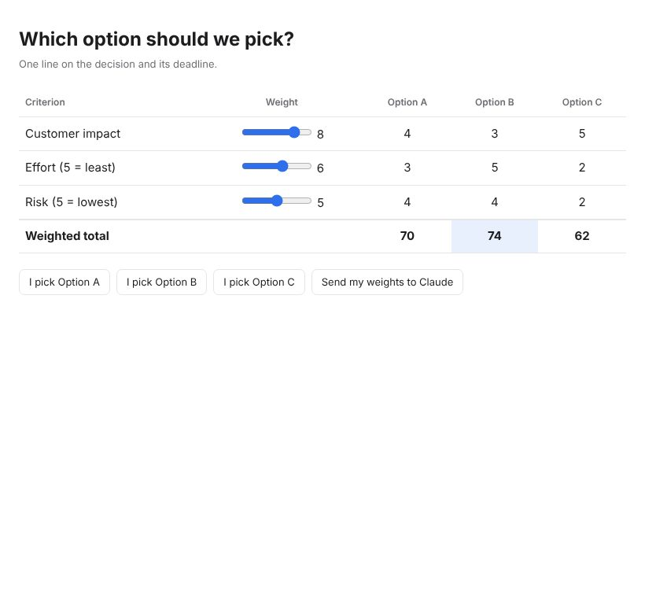

Today: four color systems in one product
These are screenshots of the current build. Each surface was styled on its own, so the brand navy sits next to Omnigent's pink, an Apple-style blue and a preview orange.




The proposal: a cockpit in daylight
The name gives the system its vocabulary. A cockpit is a calm navy panel where color is reserved for meaning, and pilots learn those meanings once. Three ideas come from it:
- Navy is the frame. The brand navy holds the structure: the sidebar or header, primary buttons, the logo. Content sits on cool white.
- Status colors follow annunciator lights. Green is done, blue is advisory (ready for review), amber means "look at this" (needs you), red is reserved for failures.
- Your course is magenta. On a flight display the magenta line is the route the pilot programmed. Here it marks what you did: your edits, ticks and notes. Nothing else uses it.
Type stays on the Mac's own system font (offline rule), set tighter for headings with numbers in aligned columns. The small all-caps mono labels in today's views go; labels become plain sentence case, which reads calmer and is easier to scan.
Before and after
A session in the middle of the requirements scenario: the scope form as a chat widget, and the catalog on the canvas. The widget and canvas are the real view-kit output, recolored by handing them the token set, which is exactly how the build will do it. Flip between the options to see each decision below in place.
Templates follow the same tokens
The decision matrix template, unchanged except that it now reads the shared tokens instead of its own colors.
How one change reaches everything
One file holds every token. A small build script writes it out for each consumer, and the canvas viewer hands the current tokens to every artifact as it opens it. So a token change restyles the app, every widget, every template, and artifacts that were made before the change.
Views keep the token names they use today (the --pa- names), so existing scenarios and specs keep working. The collaborative editor's per-author colors become tokens too, and the main agent keeps its own color for its direct edits.
Three decisions for you
Each one is on a card in the thread with a "Something else" option. The controls above show every option in place.
1. Where the navy lives
A navy sidebar makes the brand obvious at a glance and gives the work area a clear frame, like a cockpit panel around the instruments. Navy accents keep today's light layout and only swap pink for navy, which is the smallest change. A navy header band is in between, but it costs a row of height on every screen.
2. The color for what you did
Magenta borrows the flight-display convention and stays clear of every status color. Rust is what the views use today; it sits close to amber, so if "needs you" turns amber the two would blur.
3. The color for "needs you"
Amber says "look at this" without alarm, and leaves red for real failures. Red (today) is more urgent, but with three or more items waiting the catalog starts to look like an error report.